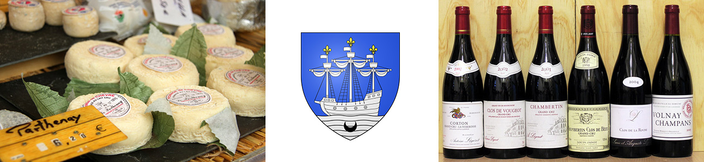

Маршрут разработан Никитой Захаровым в 2014 году.
Маршрут начинается в старинном городе Ангулем в департаменте Пуату-Шарант, идет вдоль реки Шарант в столицу «воды жизни» Коньяк, поворачивает на правый берег Жиронды в курортный Ройян. Переправившись на левый берег в городок Сулак мы целый день будем ехать по Серебряному побережью Бискайского залива, а в городке Уртен повернем, чтобы пересечь знаменитый Медок - виноградное сердце Франции. Близь Марго мы вернемся на правый берег и через второй порт на Жиронде – город Либурн и сказочный виноградный Сен Эмилион приедем в Бордо.Франция – она разная, Велотур видел королевские замки Луары и береговые укрепления Нормандии. Юго-запад шестиугольника (Hexagon, как называют себя французы) - совсем другой, но тоже прекрасен. Лишь одно остается неизменным - приветливость людей, красота их жилищ, чистота природы… и уважение к велосипеду.
Аквитания. Звучание этого слова создаем в голове образы обширных водных пространств- речных и морских, бесконечных виноградников Медока и Бордо, величественных крепостей, старинных замков, древних, полулегендарных городов, огромных лесов Гаскони, по которым скакал когда-то д’Артаньян, белых домиков страны басков с красными ставнями и крышами, словно взятыми из сказок Перро, скал легендарной Наварры – маленького королевства, откуда Генрих IV пришел в Париж, который “стоил мессы”, положив тем самым конец периоду кровопролитных религиозных войн во Франции.
Окруженная с трех сторон водой, Аквитания недаром содержит в своем названии воду. Здесь две крупные реки Франции Гаронна (Garonne) и Дордонь (Dordogne), сливаясь, дают начало самому длинному в Европе (75 км) полноводному эстуарию - Жиронде (Gironde). Впадая в Атлантику, Жиронда имеет ширину около 25 км. Отступим на сотню метров от Жиронды, и мы попадем в сказочный пейзаж виноградных полей – именно полей, а не садов, т.к. высота куста винограда не более метра. Ровными рядами виноградники уходят на километры вдаль, к разбросанным тут и там chateaux. В переводе «шато» означает замок, но здесь это слово имеет совсем другой смысл по сравнению с замками Луары, где это были роскошные апартаменты, где короли предавались удовольствиям. На Жиронде – шато - усадьба владельца виноградника без всяких признаков фортификации (впрочем, многие из владельцев своего рода короли производства вина, и имена у них знаменитые – например, Ротшильд). Здесь же, в шато, расположено производство вина и его хранение. Теперь это - огромные залы, где блестят и сверкают огромные чаны из нержавейки. Кстати, с появлением этого материала произошла революция в хранении вин. Большинство шато открыты для посетителей – организуются дегустации, и производится розничная продажа. Здесь же можно договориться о поставках крупных партий.
Прибрежные районы Жиронды – это место, откуда весь мир снабжается изысканными сухими винами и коньяками. Стоит, наверное, поговорить об этом подробнее. Однако Велотур предупреждает – чрезмерное употребление алкоголя вредит вашему здоровью
Итак, справочник винолюбителя. Виноград завезли в Аквитанию римляне, завоевавшие территорию Галлии в самом конце прошлой эры. Винограду очень понравился местный климат. Долгое время виноградные напитки производились для узкого потребления, но уже к 14 веку в одну только Англию поставлялось около 100 млн! литров вина в год. Виноделие и виноторговля в современном понимании начались в середине 19 века, когда были введены определенные критерии качества, и проведена стандартизация. Оставим вне рассмотрения столовые вина (vins du table) и региональные (vins regionaux) и рассмотрим вина, носящие гордое обозначения АОС. Appellation d’Origine Controlé. В переводе это звучит как «наименование, контролируемое по происхождению». Мы придумаем русское слово апелласьон. Он обозначает собой регион, край, местность происхождения продукта (ведь АОС относится не только к вину, но и сыру, мясу, даже чечевице – первое подобие АОСа появилось в средние века для рокфора). АОС определяет качество товара, его характеристики, которые исторически сложились под влиянием данной местности. В эту оценку обязательно включается и человеческий, и природный факторы. Естественно, кроме структуры почвы, рельефа и любых знаний винодела, здесь также учитывается и сорт винограда. Необходимая информация о принадлежности к данному апелласьону всегда указывается на этикетке. Кроме того, на этикетке отмечают название и Шато (напр. Château Margaux), год урожая (миллезим), классификацию, если таковая имеется (к примеру, Cru Classé 1855- это год, когда была опубликована классификация), крепость, объём и место розлива вина (к примеру, Mis en bouteillé au Château Margaux). В каждом апелласьоне своя классификация, высшая – это обычно Grand Cru (не во всех апелласьонах она присутствует), вторая – Premier Cru, далее cru bourjeous и прочие). В регионе Бордо 57 апелласьонов (всего у французских вин их 300). Самые известные - Медок, О-Медок, Грав, Сент-Эмильон, Помероль и Сотерн; коммунальные: Марго, Пойяк, Сент-Эстеф, Сен-Жульен, Листрак и Мули. Ну, а для перечисления всех Шато понадобится толстая книга (кстати, она у меня есть), а здесь вы можете посмотреть карты всех винодельческих регионов Франции), а здесь подробно о винных районах Бордо.
Однако, вернемся на землю. Побережье Бискайского залива от места впадения Жиронды на юг до залива Аркашон (Arcachon) - это Серебряное побережье (Cote d’Argent) -150 км дюн (до сотни метров высотой) и песчаных пляжей, на которые почти всегда набегают огромные голубые валы “ревущих 40-ых”. Глядя на огромный океан с высокой песчаной дюны, человек здесь ощущает себя песчинкой на огромной планете. Места тут заповедные и пустынные: городки очень редки, селений нет, а промышленность запрещена. При этом – множество асфальтированных дорожек - специально для велосипедистов.
Обладающая благодатным климатом и находящаяся между Испанией и Францией, Аквитания имела непростую историю. После падения римской империи, территория была захвачена вандалами и вестготами, потом здесь прошлись испанские сарацины, затем ее раздирали междоусобные войны между аквитанскими и гасконскими герцогами. Своеобразное престолонаследное право во времена легендарной Элеоноры Аквитанской, супруги английского короля Ричарда Львиное сердце, отдало регион под власть английской короны. Когда спустя 300 лет, в конце столетней войны, французы пришли освобождать регион Бордо, они встретили ожесточенной сопротивление местных жителей – ведь те говорили по-английски и считали себя англичанами. Многие считают, что Аквитания – это искаженное название Окситании (Occitane) – обширного региона, образовавшегося в раннем Средневековье и занимавшего территорию от Атлантики и Пиренеев до Средиземного моря и Аппенин и включавшего современные департаменты Каталонию, Лимузен, Овернь, Лангедок, Прованс, Лигурию и пр.). Хотя политически Окситания существовала в это бурное время лишь короткие промежутки истории, историческая общность, язык и культуру она сохранила и по сей день. До сих пор жив, несмотря на запреты, язык окситан (в некоторых коммунах Франции он даже преподается в школах), есть флаг – желтый стилизованный крест на красном полотнище, несколько книжных магазинов в Тулузе, считающейся неформальной столицей Окситании. Продолжается и борьба за признание языка окситан вторым государственным. Ну, а для нас теперь слово Occitane ассоциируется с парфюмерией и винным апелласьоном - Pays d’Oc (это- в регионе Лангедок-Руссийон). В нашем путешествии мы, пусть и коротко, охватим многие стороны Аквитании, но, конечно, мы не сумеем увидеть все.
Наше путешествие можно назвать «Вокруг Жиронды». Мы будем двигаться по небольшим дорожкам почти без холмов, по обеим сторонам Жиронды (пересечем на пароме Жиронду в двух местах), через небольшие городки: и старинные, и современные - курортные, пересекать многочисленные виноградники, посещать шато-винарни, загорать на пляжах Атлантики. Дневные пробеги редко достигнут 60 км. Начало и конец путешествия – в крупных городах - Ангулеме и Бордо, которые связаны с Парижем скоростным поездом. Кроме того, аэропорт Бордо принимает и международные рейсы. Заранее решите и сообщите нам, если вы соберетесь приехать раньше в Ангулем или задержаться в Бордо.
Место для строительства укрепленного города на высоком плато на излучине реки Шарант (Charante) было выбрано еще в римские времена. Ангулем - типичный французский городок – уютный, тихий, древний, похожий на музей архитектуры. Центр города находится на плато, куда ведут крутые подъемы. Здесь расположены выстроенный в романском стиле Ангулемский собор 12 века, впоследствии значительно перестроенный, относительно современное здание мэрии, куда органически включены части более старинных зданий 13 и 15 веков, несколько церквей с византийскими куполами, несомненно, построенных под впечатлением от крестовых походов. Вы встретите памятник королеве – той самой королеве Марго. Городской крытый рынок находится в перестроенном в 19 веке здании замка Каролингов 10 века. На месте крепостного вала на краю плато проложен широкий бульвар, с которого открываются виды на нижний город и на Шарант. Бульвар, который используется, как одна из немногих во Франции кольцевых трасс для автогонок. С XIV века в городе процветали бумажные мануфактуры, а впоследствии и типографии — благодаря круглогодичному наличию чистой воды практически постоянной температуры, поступающей из подземных рек.
Выехав из Ангулема, мы едем вдоль сонной речки Шарант через перелески, мимо виноградников и кукурузных полей, встречая на пути маленькие городки. Здесь в архитектуре преобладает романский стиль – даже обычный сельский домик выглядит как крепость. Длинные, но узкие, словно бойницы, окна, спиральные лестницы на верхние этажи словно высечены в тесных каменных нишах. Впечатляют мосты с арочными сводами, какие строили римляне. Еще архаика – шлюзы, по сей день управляемые вручную. По всему Шаранту их 19, и появились они еще в XVI веке при Генрихе IV – главный министр Сюлли пытался улучшить водные артерии, по которым жители сплавляли к Атлантике вина, соль, шкуры и пшеницу на своих парусных баржах – gabares. На этих gabares, которые со времен Средневековья по сей день строятся в городке Сен-Симон, сегодня катаются туристы.
Коньяк. Это чистый, ухоженный старинный городок – первый замок был построен в 950 году на берегу Шаранта для защиты от норманнов. Сегодня здесь расположены хранилища всех коньячных домов Франции. Говорят, что воздух в Коньяке перенасыщен алкогольными парами, Это не миф: представители дома Otard, сообщают, что "ангелы" только у них выпивают 300 тыс. бутылок в год (потери от испарений коньяка здесь называют "долей ангелов"). 300 тыс. только пропадает, вы представляете сколько их всего! Все коньячные дома зовут на экскурсии в свои хранилища. Их много. Среди них знаменитые Remy Martin, Camus, Martell, Courvoisier, Hennessy. Но именно Otard может гордиться тем, что владеет замком Chateau de Cognac, положившим начало городу. Трехметровые стены замка позволяют поддерживать уникальный микроклимат, необходимый для правильной выдержки коньяка. С другой стороны, история замка неразрывно связана с историей Франции и в том числе с историей французского коньяка. Никакой династии Коньяк не было в помине – был город Коньяк, где лишь в XVII веке стали делать «воду жизни». Сам Шато де Коньяк издревле был яблоком раздора французских и английских королевских династий – Валуа и Плантагентов. В 1494 году в одном из покоев замка родился самый настоящий король – Франциск I - один из самых просвещенных вождей французского народа. Он первым стал строить вертикаль власти, известную позже как абсолютизм и душил протестантов. Проведя детские годы в Коньяке и став королем, первым своим указом он повелел отремонтировать замок Коньяк – раньше, чем другие свои резиденции (Шамбор, Блуа, Фонтенбло, Лувр). Здесь он поселил свою мать – Луизу Савойскую. Вот еще места, которые можно посетить в Коньяке: Дом наместника (Maison de la Lieutenance) 17 века с красивыми деревянными скульптурами на фасаде, церковь Св. Лежера (l'Église de Saint-Léger) (12 век), Приорат Св. Лежера с колокольней 17 века (Prieuré de Saint-Léger), Францисканский монастырь (Couvent des Récollets) 17 века.
Сегодня мы продолжим движение по провинции Пуату-Шарант по направлению к Жиронде. По пути мы проедем через городок Пон (Pons), доминантой которого является средневековый донжон. Узкие средневековые улочки городка изобилуют арками, башенками и часовенками. Аллеи ведут в нижний город, где расположен госпиталь пилигримов (l’Hôpital des Pèlerins) (здесь проходит путь Компостела). Здание основано в 12в Годфри III и объявлено ЮНЕСКО всемирным наследием. Оно и по сей день служит пилигримам. Но вот мы вырываемся на высокий берег Жиронды. Впрочем, до воды километров 5. Низина, заливаемая во время прилива и сложенная осадочными породами, которые несет Жиронда, болотиста и непроезжаема, и дорога идет по широкой гряде вдали от воды и только изредка приближается в ней. В городке Mortagne-sur-Gironde - высотной доминанте Жиронды - открывается замечательных вид на эстуарий, имеющий здесь ширину 14 км. Следующий городок на пути - Тальмон-сюр-Жиронд (Talmont-sur-Gironde) - очередной архитектурный шедевр Средневековья. Занимающий крошечный скалистый полуостров, выдающийся в Жиронду, он окружен со всех сторон высокой набережной с променадом. От цитадели бастиды, основанной в конце 13 века английским королем Эдуардом (bastide - это укрепленный город) в настоящее время осталась только площадь и остатки Белой башни, названной так по аналогии с белой башней в Лондоне (не забываем: в 13 веке здесь была Англия). Сеть средневековых улочек осталась за восемь веков неизменной, а белые домики с яркими голубыми ставнями, виднеющимися из-за подстриженных роз, наверняка стали красивее. Архитектурной доминантой является церковь Св. Радгонда (Saint Radegonde). Заложенная в 12 веке, как романская, она в14 веке приобрела готические черты. Интересно будет взглянуть на скалу Кайо (Caillaud) и деревянные рыболовецкие понтоны на длинных ходулях, характерные для Жиронды.
Сегодня у нас короткий бросок до города Ройан (Royan) – курортного центра побережья красоты (Cote de beaute), знаменитого длинными песчаными пляжами в обрамлении известковых скал, многочисленными гостиницами и казино, а затем водное путешествие. Ройан был бы похож на Ля Рошель с ее прибрежными башнями, но ему повезло меньше. Он также был центром протестантского сопротивления и пострадал от «нехорошего» Ришелье, который повелел снести все его фортификации и даже церкви. Много позже, в 1945 году, город оказался в одном из «мешков», из которых немцев не могли выбить много месяцев после успешной нормандской высадки. Союзники уничтожили город с воздуха, при этом погибло около 2000 человек гражданского населения и аж 17 немецких солдат, а также были сожжены все здания. Кстати, там впервые американцами был испытан напалм. Город заново родился в 1950 году. Здание рынка датируется 1955 годом, дворец конгрессов – 1957, Нотр-дам - 1958. Используйте свое время, чтобы насладиться крупным современным французским фешенебельным курортом, имейте в виду и безопасность для купания местных пляжей – в Атлантике такой роскоши не будет.
Паром перенесет нас через Жиронду мимо маяка Кордуан (phare Corduan) в 7 км от берега на оконечность Медока – песчаный мыс Pointe de Grave. Узкий мыс между и Жирондой и океаном подвержен воздействию ветров, океанских волн и течения и изменяет береговую линию на километры в течение не тысячелетий, а лет. Так, приморский город Сулак в 12 километров на юг во времена английской Аквитании (1154-1454) был портом на эстуарии. Если бы не работы по укреплению мыса, начатые в середине 19 века, он вполне мог оказаться материковым городом. Современный порт Вердон (Verdon) находится на эстуарии в нескольких километрах. Он пережил эпоху своего расцвета до II мировой войны, когда отсюда уходили огромные океанские лайнеры, пересекающие Атлантику. А вот планы создать здесь крупный контейнерный и нефтяной терминал, предпринятые в конце прошлого века, не увенчались успехом, и Серебряный берег был спасен. Лесными дорожками едем в Сулак-сюр-Мер. Главная достопримечательность Сулака -базилика Нотр Дам на Краю Земли (Notre dame de la fin des terres) 12 века. Там по преданию похоронена Св. Вероника (та, что подала Христу на пути на Голгофу платок, чтобы тот вытер лицо), и именно этот храм был одной из отправных точек для пилигримов на пути в Сантьяго ди Компостела. Храм был погребен под песком вместе со средневековым Сулаком в результате движения дюн, но в середине 19 века выкопан. Современный Сулак – это аккуратные ряды домиков, выполненных в едином стиле, площади, вымощенные плиткой, чистой до блеска, морской променад, копия нью-йоркской статуи свободы, фонтан Клемансо, часовня Амелии, полу-погребенные под песком остатки оборонительных сооружений немецкого атлантического вала, а также многочисленные кафе и рестораны и, конечно, великолепный пляж.
Сегодня Атлантический день. Покинув Сулак, мы отправимся вдоль Серебряного побережья на юг в сторону Монталиве (Montalivet le Bains). Нельзя сказать, что мы поедем, любуясь океанскими видами. По широким (до ста метров) песчаным пляжам ехать невозможно. Сразу за пляжем обязательно присутствует высокая дюна, и дорога проходит вдоль нее со стороны суши. Французы очень трепетно и бережно относятся к дюнам. На них мало что может расти, но дюны обычно огорожены невысокими заборами, проходы через которые редки, и имеют деревянные лестницы, чтобы не топтать песок. Проходы чаще всего расположены в городках. После Монталиве дорога уходит от океана, на пару километров, и теперь его присутствие ощущается лишь как глухой рокот валов, набегающих на берег. Мы двигаемся по узкой асфальтовой дорожке сквозь невысокие сосновые леса. Машины встречаются крайне редко, и их скорость ограничена 50 к/ч, а в высокий сезон они запрещены вовсе. Свернуть в дорожки нельзя – сразу попадаешь в глубокий песок. Впрочем, есть и развлечение – оно называется Piste littoral – прибрежная дорожка – она идет уж совсем вдоль дюны и представляет свой узкую (не более 1 м) бетонную полосу, петляющую по лесу между деревьями. Многочисленные велодорожки пресекают нашу сквозную дорогу и обозначены, как петли – обычно в сторону огромного внутреннего озера Уртен (Lac Hourtin), вдоль берега которого тоже стоит проехать. В общем, если есть велосипедный рай, то он здесь. Но вот мы доехали до маленького городка Hourtin Plage, где можно отдохнуть и насладиться океаном (кто в ресторане, а кто умеет – на доске серфера). На ночевку мы отправимся в город Уртен на берегу озера.
Это близко, но все будет зависеть, насколько вы выдержите прямолинейность пути после дегустаций. В последующие два дня мы двигаемся по всхолмленной равнине и пересечем Медок – местность на левом берегу Жиронды - главный винодельческий район Франции. Лето здесь достаточно теплое, чтобы виноград полностью вызревал, а зимы достаточно холодные для того, чтобы лозы отдыхали, и в то же время они не такие суровые, чтобы лозы погибали. Хотя в римские времени местность была непроходима из-за болот, и римляне разводили виноград на правом берегу, сейчас правобережье уступает левобережью в винной славе, хотя и правом берегу есть знаменитые апелласьоны - Blaye, Burg, Fronsac и, конечно Saint Emilion Собственно, виноградники левобережья расположены на узкой полосе шириной не более 5- 7 км и длиной менее 50 км: от городка St. Christoly Medoc - на севере до Ludon Medoc - на юге. И эта узкая полоса при всего нескольких сортах лоз (Мерло, Каберне-Франк и Совиньон) дает такое многообразие эксклюзивных вин! Культура виноделия складывалась здесь веками. Здесь все зависит от многих факторов: почвы, ее дренажных способностей и предыстории в доисторические времена, наличия холмов и направлений их склонов по отношению к солнцу и, конечно, от опыта и искусства винодела. Ассамбляж (смешение) различных сортов – главный секрет виноделов. Нельзя сказать, какое вино лучше, каждый апелласьон по-своему прекрасен. Кому-то нужна утонченность и тона букета, кому-то - баланс, кому-то - густота и терпкость, кому-то -элегантность и мягкость букета. Условно считается, что апелласьоны О-Медока (Haut Medoc) и Grand Cru Pauillac (AOC Medoc) самые изысканные. Самым аристократичным будет Saint Julien, а для женщин более подходит более мягкий букет Марго (Margaux). При выборе вина следует также иметь в виду год, в котором был собран урожай – по двум причинам: погодные условия могут испортить урожай, а многие апелласьоны требуют значительной выдержки в бутылках перед употреблением (например, Pauillac или Saint Estephe). Впрочем, здесь вы можете просветить себя более подробно. Мы, конечно не сможем осмотреть все шато или попробовать все апелласьоны. Однако, мы планируем остановки для осмотра шато. Здесь надо, однако, отметить, что осмотр и дегустация в знаменитых шато, например, Шато Латур (Château Latour), Шато Лафит-Ротшильд (Château Lafite-Rothschild), Шато Мутон-Ротшильд (Château Mouton-Rothschild) вблизи Пойака надо планировать заранее и потребует затрат (несколько десятков евро с человека). Посещение многих шато бесплатно (однако только для индивидуалов), и вам скажут спасибо за то, что вы купили что-нибудь. Имейте в виду, что вино в шато будет дороже, чем можно купить в магазине (но там не будет такой эксклюзивности). Начав в Уртене, мы сначала не увидим ничего, кроме лесов и полей. Виноград мы увидим только после городка Леспар-Медок (Lesparre-Medoc), когда до Жиронды останется всего несколько километров. Мы увидим апелласьоны Medoc, S.Estephe, Pauillac.
Однако отвлечемся от алкоголя. В городе Леспар есть церковь Св. Трелоди (S. Trelody) 14 века и более новая - l’Eglise de Notre dame d’Assompsion, а также дворец правосудия. В деревеньке Verteille есть аббатство августинцев 12 века и развалины средневекового замка. И, наконец, проедемся по самому берегу Жиронды и увидим ее вблизи. Маленький городок Пойак на берегу Жиронды более знаменит, как центр виноделия, чем архитектурный центр. Его можно обойти за полчаса, если не считать широкой набережной Жиронды, видной где-то за камышами. Гостиница в Пойаке
Очень близко, но шато еще больше, чем вчера Сегодня мы едем по дороге замков (Route de chateaux). О вине уже сказано достаточно. Мы увидим апелласьоны: S.Julien, Listrac, Moulis, Margaux. В Cussac-en-Medoc увидим форт Медок – одно из трех фортификационных сооружений архитектора Вобана (того самого, что построил цитадель в Сен Мало), перекрывавших вход в Жиронду с помощью артиллерии. Гостиница в Марго, из окон, естественно, вид на виноградники и шато.
Мы вернемся немного назад, в деревню Ламарк (Lamarque), чтобы сесть на паром, который перевезет нас на правый берег Жиронды - в Блэи. Здесь расположена цитатель нашего старинного знакомого - маркиза Вобана – прекрасно сохранившееся монументальное фортификационное сооружение с высокими стенами, арками, рвом и лестницами, откуда открывается замечательный вид на Жиронду и ее острова. После осмотра цитадели мы продолжим движение через виноградники апелласьонов Cote de Blaye и Cotе de Bourg и далее по порядку Grave, Bordeaux, Bordeaux Superior (ох, уж этот виноград, смотреть на него не могу) вверх по течению Жиронды, впрочем скоро она, у городка Бург, обратиться в Доргонь. Расположенный на высокой скале над Дордонью, крохотный Бург (Bourg sur Gironde) хорошо известен в истории Франции с 4 века. Здесь живали французские короли Карлы VI и IX, Людовики XIII и XIV. Едем далее и, пересекая шоссе Бордо-Париж возле городка Saint Andre de Cubsac, попадаем в Либурн – второй (после Бордо) порт на Жиронде. Здесь есть многоарочный мост через Дордонь, сохранившаяся средневековая башня, живописная городская площадь с многочисленными кафе и ресторанами.
От Либурна до Бордо – всего ничего, но поедем сначала в знаменитый винный центр апелласьoна Saint Emilion. Пять с половиной тысяч гектар виноградников вокруг него дают 6% вин Бордо. А сам городок – средневековая сказка – полон винных магазинов. Не в каждый из которых так просто зайдешь. На двери висит ценник: 3000, 5000, 12000… евро за бутылку. Мы с сожалением покидаем этот винный рай миллионеров и, пересекая Дордонь в городке Branne, апелласьоны Entre de Mer и Premier Cote de Bordeaux, а затем Гаронну по Петровскому мосту (pont de Pierre) уже в самом Бордо, мы приезжаем в столицу Аквитании. Бордо.
Когда говорят об этом городе, сразу начинают разговор о винах. Их (апелласьонов) вокруг действительно много. Кроме упомянутых Entre de Mer и Premier Cote de Bordeaux, есть Pessac Leonagn и Grave и, конечно, Haut Medoc. Ну, а в самом Бордо есть дом вина, где проходят курсы для знатоков вина (от дня до недели). По вечерам можно проходить практику в местных ресторанах, так что зарезервируйте недельку…
Что посмотреть в Бордо? Порт Луны — именно в этом районе в I в. до н. э. началась колонизация Аквитанских земель. Галло-римский порт Бурдигала положил начало развивающемуся городу на перекрёстке морских торговых путей. Затем был Бордо средневековый Элеоноры Аквитанской и триста лет английского владычества – Бордо считается самым нефранцузским городом Франции. Район Les Quais — старая гавань Бордо. Пешеходный центр города и кварталы Сен-Пьер, Сен-Мишель, Сен-Круа и Сен-Элали — великолепие архитектурных памятников всевозможных стилей: от массивных строений раннего средневековья до стрельчатой готики и испанских арочных галерей. Чтобы получить самое полное представление о здешней архитектуре, пройдите по улице Sainte-Katherine. Здесь же расположено множество магазинов. С башни Сан-Мишель открывается прекрасный обзорный вид на старый Бордо. Католический собор Saint André, а также Grand Opera. Не пропустите и знаменитый плоский фонтан на набережной у биржи – идущих по нему вдруг окутывает пар. Не менее богат на достопримечательности и район La Victoire: обратите внимание на величественную прекрасно сохранившуюся древнеримскую Триумфальную арку. Площадь Гамбетта — начало элитных районов Бордо, простирающихся к северу - именно за это район Бордо называют маленьким Парижем. Среди музеев Бордо можно порекомендовать Музей Аквитании для любителей истории и Музей современного искусства (Musee D’Art Contemporain). И еще Бордо - очень велосипедный город с продуманным велодвижением. На всех улицах есть выделенная полоса для велосипедов. Широченная набережная Гаронны, огибающая город широкой дугой, легко делится между пешеходами, бегунами и велосипедистами. Она проходит мимо ростральной колонны (ну совсем, как наша), морской биржи, биржи просто, многоарочного моста (Pont de Pierre) - визитной карточки Бордо - к вокзалу. Любой поворот – и вы в интересующей вас центральной части города.
Можно вылететь на родину из аэропорта Бордо, а можно сесть на скоростной поезд и добраться до Парижа. Какой вариант Вам будет удобнее, такой мы и поможем организовать.
Для оформления страницы использованы фото с сайтов: vparis.net, pro100kov.livejournal.com, macos.livejournal.com
{/block}